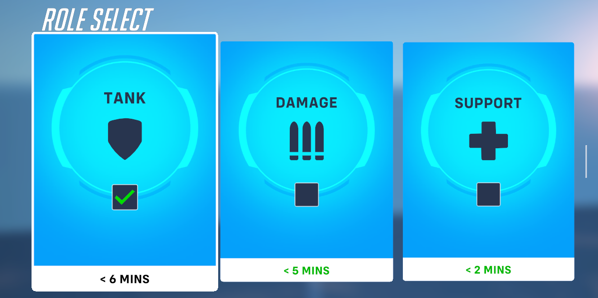
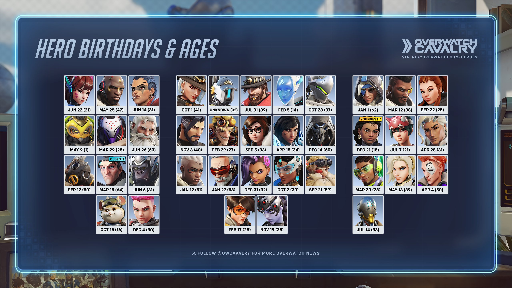

Overwatch Classes and Heroes
The different classes of Overwatch
Classes can be better understood using the term roles, each hero in the game belongs to one of three roles in the game; tank, damage, and support. Tanks are high-health heroes who act as bullet sponges and create space for their team to advance or take damage so their team can retreat or regroup. Some tanks have shields that they can use to protect their team and block off the enemy from attacking certain angels or heroes. Tanks have a lot of responsibility because not only do they have to do their part in dealing damage they must be able to provide the space for their team to advance or strength to defend. There is only one tank a team so it's up to you and you alone to fill that task, although tanks have widely different abilities and playstyles those key gameplay mechanics hold for all tanks. Damage, as one can guess, are responsible for dishing out the damage to the enemy while also defending other from flanking enemies and keeping themselves in a good position. If the damage dealers are not doing their job the game can quickly snowball in the enemy team's favor, it gives the enemy team a chance to get a lot of more kills, and pressure on the objective, as well as charging their ultimate attacks quicker. If the damaged hero does not position themselves well it can also lead to these things, their over-extending, getting greedy, and chasing enemies they shouldn't, or making it impossible for their supporters to heal them without also dying because of where they positioned themselves. Damage heroes have less to focus on and manage but detrimental to winning the game which leads to a lot of pressure being put on them. Finally, the last role is to support, which is what I currently play 90% of the time, as you could expect their job is to support and heal their team. Supports are generally how heroes are going to regain health. Some characters can self-heal and health packs on the ground but the support is going to be where you get most of your healing from. They are also responsible for using abilities to save their teammates from certain death all while balancing their own life and making sure they don't die. It's because of this I feel like they get the worst rap and hate from the community. If tank or damage does bad they will generally blame it on support regardless of how well they are doing. Supports can save their team 100 times and fail once and they will focus on the failure. You can multitask and do damage as well as flank but can also focus on pure healing which can be a little slower pace and easier going than some of the other roles. Not with how I play though.
Different heroes for different people
One thing I really like about Overwatch is the plethora of different ways and styles that you can play, the characters are so vastly different I would find it hard for someone to find a hero they don't like playing. Even within each role, they differ extremely, support has straight medics that rarely combat and focus primarily on healing but also others that can deal out damage and help their teammates flank. There are even supports that are like mini tanks and have shields and are meant to be on the front line helping create space and then defend that space. My favorite character is a support named Kirkio she has an insane and highly useful kit that fits my playstyle perfectly. She has a base healing ability that has a slight homing effect making it easy to heal teammates, she throws kunai that deal damage and multiply on headshots, can teleport to teammates within a certain distance, and can be used almost every 5 seconds, a cleanse ability that negates all effects on a teammate and make them briefly invincible, and a ultimate that increase attack/movement speed and decreases cooldowns for teammates effected by it. That's just one character and already multiple gameplay mechanics are introduced, it's interesting and fun to learn how all these characters interact and what abilities clash or cancel each other, etc. There is a character for every play style and it makes the game appealing to many people in different demographics.

- Kirkio(my main)
- Baptise
- Ana
- Sombra
- Echo
- Ashe
- Tracer
- Moria
- Hammond
- Winston
- Pharah